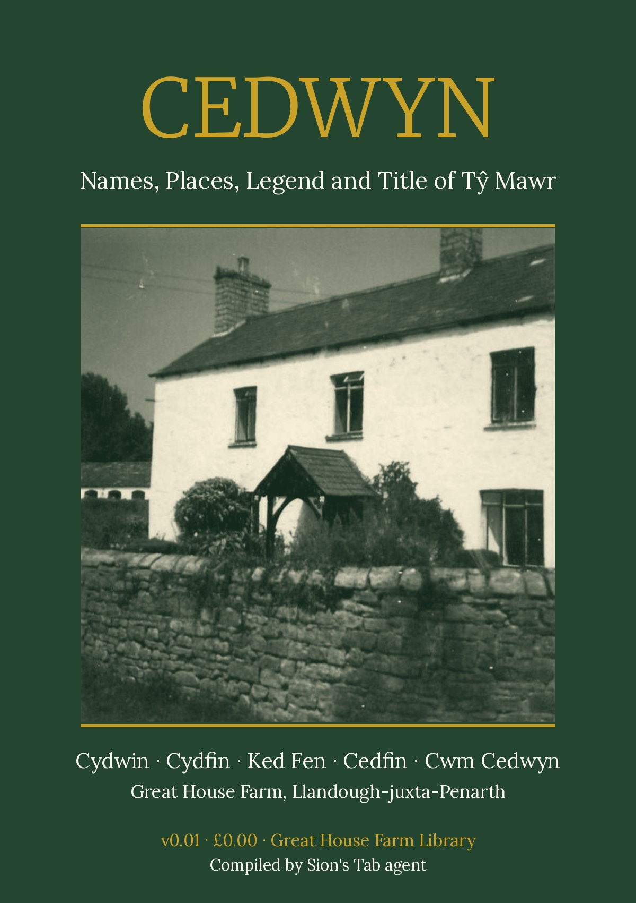

Cedwyn: Names, Places, Legend and Title of Tŷ Mawr¶
Introduction¶
Tŷ Mawr, the Great House Farm at Llandough-juxta-Penarth, carried other names in the records: Cydwin, Cydfin, Cedfin, Ked Fen and, through a probable copying slip, Red Fen. A wooded dell and a brook on the River Ely just north of the farm are called Cwm Cydfin and Nant Cydfin on the Ordnance Survey, and Cwm Cedwyn and Nant Cedwyn in a standard work on the Welsh saints. A saint named Cedwyn and a giant named Cedwyn Gawr appear in older Welsh sources.
This book gathers what the record holds on those names, the places near the farm that carry them, the legend of the giant, the saint, and the line of title that passes through them, starting with a lease for 1,000 years granted by Sir George Herbert of Swansea in 1547. Every statement has a source. Every item is graded:
CORROBORATED two or more independent sources agree;
DOCUMENTED one primary source or archive catalogue entry, read for this edition;
INFERENCE a reasoned reading of documented items, not yet tested against the original document;
LEGEND a traditional story, told as a story, with the manuscript or book it comes from;
SOURCE PENDING reported in earlier research notes, but no source has been found yet.
In this book: the names and their meanings, the place-names around the farm, the giant, the saint, and the title history to 1902. Not in this book: the 1955–1988 court cases (see the Litigation Record), the family’s people (see The Williams–Buckler Family of Tŷ Mawr), the building’s fabric and archaeology (see Tŷ Mawr: The History and Heritage of Great House Farm), and the 1988 incidents (see Recorded Incidents).